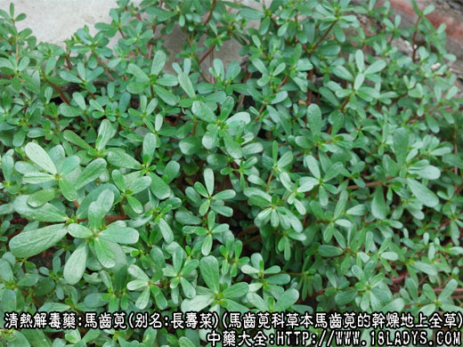
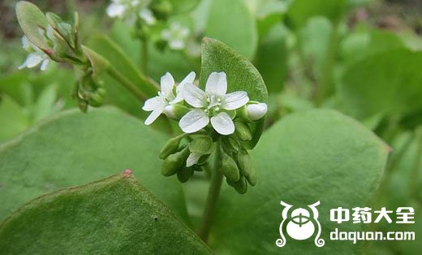

原文连接:https://www.daquan.com/post/2311.html
马齿苋为常用中药，始载《蜀本草》。它主要有止痢解毒、抗菌、利尿的作用，同时还可以收缩血管和子宫，马齿笕农村一种可以吃的野菜，全国各地均有生长，下面中药师宁宁和大家介绍马齿笕图片，教大家认识这款领可以吃的中药野菜。

马齿苋图片 野菜

马齿笕图片 中药材

野生马齿笕图片
别名：长寿菜、马屈菜。
来源：为马齿苋科一年生草本植物马齿苋的干燥地上全草，野生。
产地：全国各地。
植物形态：全草皱缩卷曲成团，色绿褐发黑，茎细有纵沟，叶长卵形，多脱落。朔果盖裂，黄褐色，内有多数细小的种子。味微酸。
以干燥、色绿褐、整齐不碎，叶多者为佳。
主要成分：茎叶含烟酸、皂甙、鞣质、尿素等，并含硝酸钾、氯化钾、硫酸钾及其它钾盐。又其提取物经检定，含左旋去甲腺素等。
马齿苋的功效与作用
主要作用为止痢解毒，现已证实其作用为：
1、抗菌。体外试验对痢疾杆菌作用有抑制作用;对大肠杆菌、伤寒杆菌等均有显著抗菌作用。
2、利尿。有效成分可能为钾盐。
此外，还有收缩血管和收缩子宫的作用。
炮制：切咀，生用。
性味：酸寒。
归经：入心，大肠经。
功能：清热解毒。
主治：热痢脓血。
临床应用：主要用于治痢。
1、治疗细菌性痢疾。单味30～60g，水煎服，或用粉剂，每日3次。每日3次。每次4.5～6g，或用鲜品半斤捣烂绞汁服，均有良好效果，能止痢和增进食欲。治急性菌痢效果越于慢性菌痢。
2、治疗痈、疖和湿疹、水田皮炎。除内服马齿苋外（方法同上），更可用其煎液局部湿敷，有消炎、止痒、消肿作用。
3、治毒虫咬伤、蜂刺伤而致局部肿痛，可用鲜马齿苋捣烂成泥外敷。
4、治疗后流血、电吸后子宫出血、不全流产、功能性子宫出血效果较好（取其可收缩子宫而止血）。
用量：内服干品30～60g，鲜品60～120g。
处方举例：马齿苋煎液：鲜马齿苋半斤，水煎，局部湿敷。
注：因本品不易干燥，加工时多经蒸煮后晒干。
了解更多清热解毒的中药，为您推荐↓↓↓↓